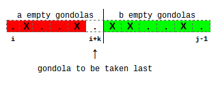

In this problem we are interested in calculating the average amount of money we will make from filling up every gondola on our observation wheel. Because of linearity of expectation, this is equivalent to summing up the expected amount of money paid by each person. Given the fact that the amount a person pays doesn't depend on the order in which gondolas got occupied, we can represent the current free/occupied state of gondolas as a bitmask and use dynamic programming to solve the small case.
Let E(mask) be the expected amount of money we make starting from the configuration represented by mask, where 0 represents an empty gondola, and 1 represents an occupied gondola. A person has a probability of 1/N of starting at any given position. Once that starting position is fixed, we simply find the first 0 following it (in cyclic order), and that's where the person will eventually end up.
We'll define f(i) as the index of the gondola occupied by a person who starts at position i. Similarly, let c(i) be the amount of money this person pays, as per the problem statement. Then we have the following recurrence:
E(mask)=1/N*∑i=0..N-1(E(mask | (1 << f(i)) ) + c(i))
The bitwise operation here simply sets the bit corresponding to the gondola the user occupied. The base case is when there are no empty positions, in which case the expected amount of money is 0.
There are 2N states, each of which can be computed in linear time, so our time complexity is O(N*2N). This is pretty easy for the small data set, but unfortunately it's far too slow for the large case.
Let's analyze the problem from the end: one of our gondolas will be the last to become occupied, so we have several cases, one per each free gondola at the beginning. The expected amount of money we will get is equal to the sum of the expected amount of money we make in each of those cases multiplied by the probability of that case.
At first, it doesn't seem we've reduced the complexity of the problem: instead of having to find just the expected amount for the whole process, we now have to find both the expected amount and the probability for several cases! However, we can repeat the above trick. Take one of those cases, let's say that gondola i is the last to become occupied. Let's look at which gondola will be occupied directly before it. Let's say it's gondola j. And here's the breakthrough: as soon as we've fixed that gondolas i and j are the last two to become occupied, the observation wheel has been separated into two independent parts that don't affect each other: those between i and j, and those between j and i. They don't affect each other since i and j stay empty, and thus no person approaching one part of the wheel will end up in the other part.
Our approach in general will be to compute E(i, j), the expected amount of money we get from all gondolas from i-th until (j-1)-th, excluding j-th gondola itself which will stay empty. It is possible to have i > j since we're dealing with a cyclic problem, so keep this in mind when implementing things. We basically start at i and proceed around the circle, stopping just short of j.
To compute expectations, we're going to need probabilities, so first let's look at P(i, j), the probability that j-th gondola will stay empty while we fill up all gondolas from the interval [i, j) assuming each coming person approaches some gondola in inteval [i, j] (note that j is included here). We can develop a recurrence to compute this.
Suppose we know that the last person enters the gondola at position (i + k). This splits the interval into two parts, with a empty squares on the left, b empty squares on the right, and 1 more empty square at (i+k).
The probability that gondola j stays empty while we fill interval [i, j) and that gondola at position (i+k) is filled last is P(i, j, k) and can be computed as:
P(i, j, k) = C(a+b, a)*((k+1)/(j-i+1))a+1*((j-i-k)/(j-i+1))b*P(i, i+k)*P(i+k+1, j)
Here C(n, k) is the binomial coefficient representing the number of ways to choose k objects from a set of n. The equation above amounts to choosing a people from (a+b) to go on the left side of the final empty space, and then making sure that (a+1) people go to the left side (including the person to fill up gondola i+k) and b people go to the right side. The probability that gondola i+k will stay empty is P(i, i+k), and the probability that gondola j will stay empty is P(i+k+1, j).
This assumes that (i+k) is empty initially, otherwise we define P(i, j, k) = 0.
Of course, we can't actually fix the final person, but since every way to fill up the interval has some final person, we can just compute the probability that gondola j will stay empty as the sum of P(i, j, k) over all possible final positions k, giving:
P(i, j)=∑k=0..j-i-1P(i, j, k)
For our base case, we have P(i, j, k) = 1 if the interval [i, j) contains no free gondolas. This also includes the case where the interval is of size 0. Don't forget, we're still in a cyclic situation!
On to computing expectations! We'll use the same trick of splitting around the last person. The expected money we get while filling out the interval [i, j) so that the last filled gondola is at position (i+k) is:
E(i, j, k) = E(i, i+k) + E(i+k+1, j) + N - k/2
Summing over all possible k to get the expectation, we get:
E(i, j)=(∑k=0..j-i-1P(i, j, k)*E(i, j, k))/P(i, j)
The way the first equation works is to combine the expectations from the left interval and the right interval, and then we need the expected number of skips to place the final person. There are (k+1) starting positions, corresponding to 0 skips, 1 skip, …, k skips. Each of these is equally likely, so the expectation is N - 1/(k+1)*(0 + 1 + ... + k)=N - k/2.
As before E(i, j, k) = 0 if gondola at position (i+k) is occupied.
To compute the final answer, we'll repeat the same trick in the final step. We try all possible empty positions as the last gondola to be filled and compute the expected number of skips. If the last empty position is i, then the expected money we get is:
P(i+1, i)*(E(i+1, i) + (N+1)/2),
and the total expected amount of money is just the sum of this quantity over all empty positions.
This algorithm is O(N3), which is easily within the time limit for the large case.